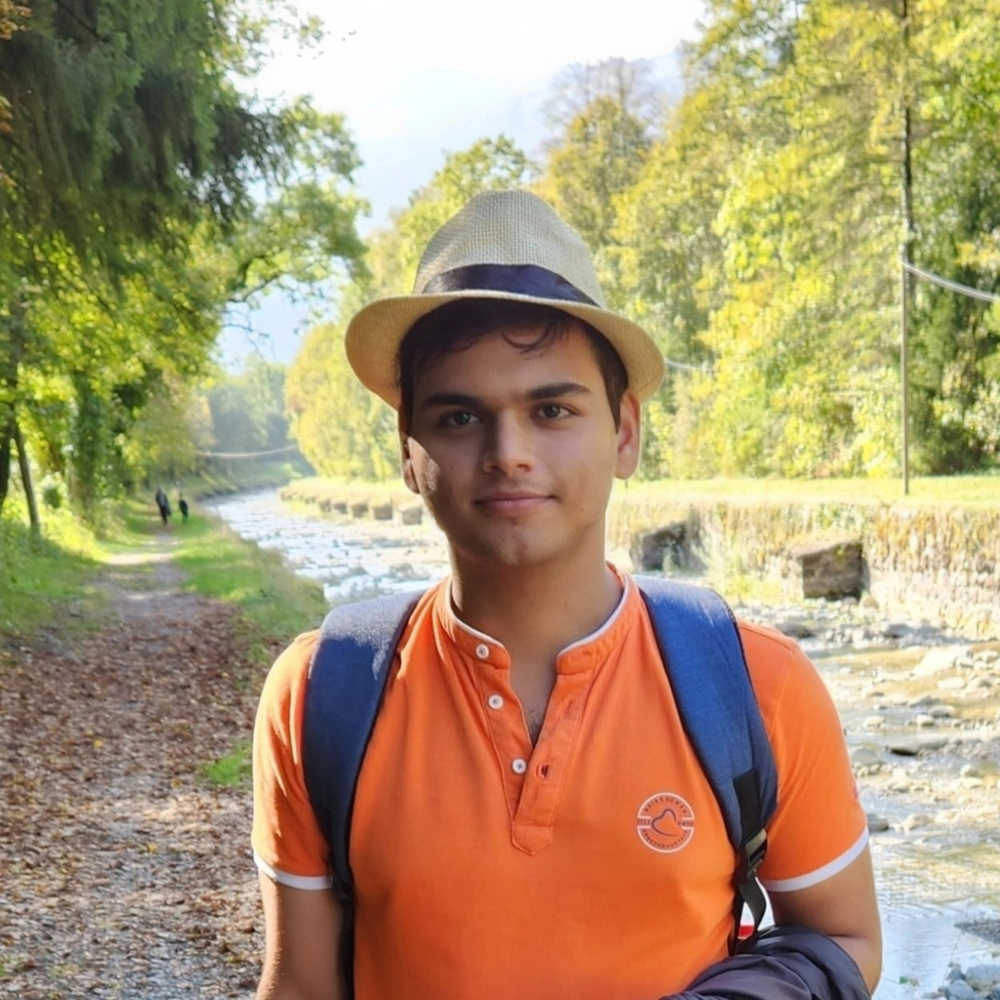

Anuj K. Yadav
|  | Anuj Yadav Contact: |
Short Bio
I am a third year PhD candidate affiliated with the Information Processing Group (IPG) in the School of Computer and Communication Sciences at the Swiss Federal Institute of Technology Lausanne (EPFL), Switzerland. I am fortunate to be advised by Yanina Shkel and Michael Gastpar. My research interests broadly lie in the union of theoretical computer science, privacy, and communications. Beyond my research endeavors, I spend time exploring the flora and fauna around me, learning languages, and reading articles on Psychology, metaphysics, and International Relations.
I spent the summers of 2024 at the Bell Labs where I worked with Christoph Fuellner and Rene Bonk on building robust access Passive Optical Networks (PONs).
Previously, I completed my bachelors with a B.Tech in Electrical Engineering from the Indian Institute of Technology Patna (IIT-P) in India. I have been fortunate to have worked with Sidharth Jaggi (University of Bristol), Amitalok Budkuley (IIT Kharagpur), Yihan Zhang (IST Austria), Laura Luzzi (ENSEA, CNRS), and Preetam Kumar (IIT Patna) on different projects during my undergraduate. My bachelors thesis titled 'Secure two-party computation: Information-theoretic Oblivious Transfer’, received the Institute Proficiency award for the best thesis in my cohort.
Education
Ph.D. in Computer and Communication Sciences, École Polytechnique Fédérale de Lausanne (EPFL), Switzerland. (2022- Present)
Visiting Student, School of Mathematics, University of Bristol, England, United Kingdom. (2021)
B.Tech (Bachelor of Technology) in Electrical Engineering, Indian Institute of Technology Patna, India. (2018 - 2022)
Research Interests
My specific Research Interests include:
Information, Coding, & Learning Theory
Probability & Statistics
Privacy & Cryptography
Communications